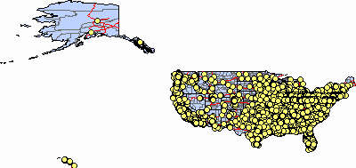
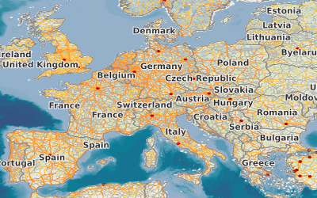
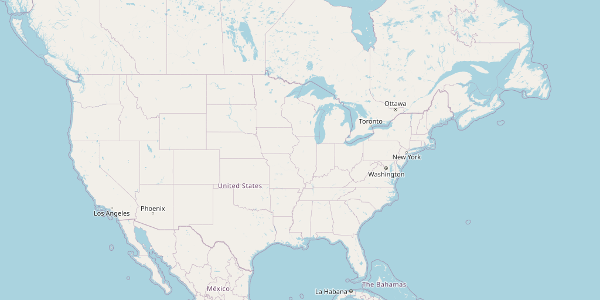
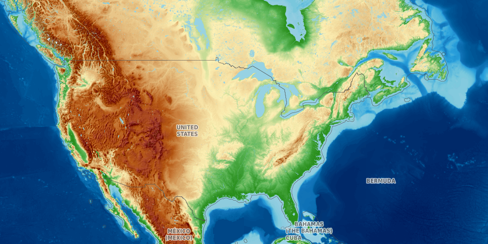
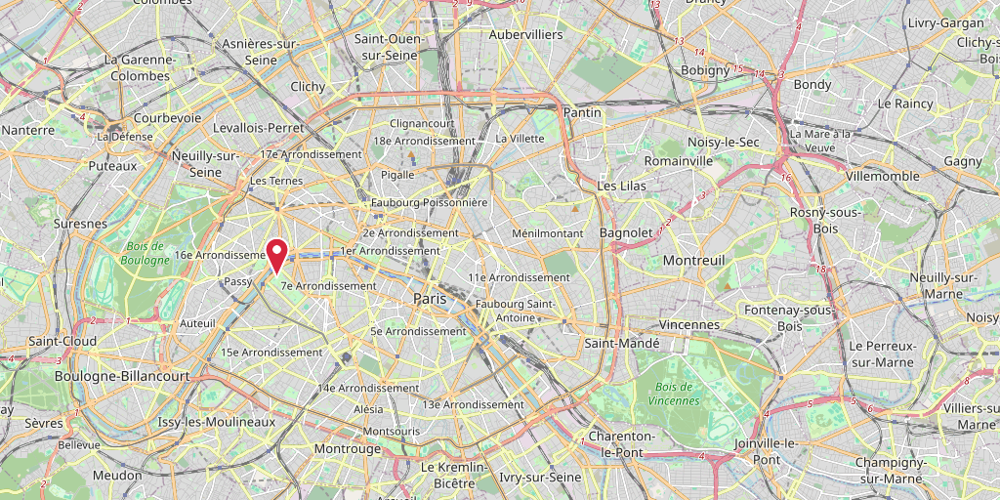

<title>inline-maps</title>
<meta name="claude:viewport-fit-sides" content="cover">
<link rel="stylesheet" href="https://fonts.googleapis.com/css2?family=IBM+Plex+Sans+Condensed:wght@600&family=IBM+Plex+Sans:ital,wght@0,400;0,600;1,400&family=IBM+Plex+Mono:wght@400;500&display=swap">
<style>
  /* Layout: one technical-manual column; S1000D-style NOTE/CAUTION callouts; figures at medium width. */
  :root {
    --bg: #f5f7f8;
    --fg: #17212b;
    --muted: #55626f;
    --rule: #d3dbe2;
    --panel: #e8edf1;
    --accent: #1d5c96;
    --caution: #9a5b00;
    --display: "IBM Plex Sans Condensed", "Arial Narrow", system-ui, sans-serif;
    --body: "IBM Plex Sans", system-ui, -apple-system, "Segoe UI", sans-serif;
    --mono: "IBM Plex Mono", ui-monospace, "SF Mono", Menlo, monospace;
  }
  @media (prefers-color-scheme: dark) {
    :root:not([data-theme="light"]) {
      --bg: #121a21; --fg: #dde5ec; --muted: #93a2b0; --rule: #2c3a46;
      --panel: #1b2630; --accent: #7cb4ea; --caution: #e9a948; color-scheme: dark;
    }
  }
  :root[data-theme="dark"] {
    --bg: #121a21; --fg: #dde5ec; --muted: #93a2b0; --rule: #2c3a46;
    --panel: #1b2630; --accent: #7cb4ea; --caution: #e9a948; color-scheme: dark;
  }
  body {
    background: var(--bg); color: var(--fg); font: 16px/1.6 var(--body);
    padding-left: max(16px, env(safe-area-inset-left, 0px));
    padding-right: max(16px, env(safe-area-inset-right, 0px));
  }
  main { max-width: 760px; margin: 0 auto; padding-block: 40px 64px; display: flex; flex-direction: column; gap: 40px; }
  section { display: flex; flex-direction: column; gap: 14px; min-width: 0; }
  h1, h2, h3 { font-family: var(--display); font-weight: 600; line-height: 1.2; margin: 0; text-wrap: balance; }
  h1 { font-size: 2.6rem; }
  h2 { font-size: 1.55rem; padding-top: 14px; border-top: 1px solid var(--rule); }
  h3 { font-size: 1.15rem; }
  p, ul, ol { margin: 0; max-width: 65ch; }
  ul, ol { padding-left: 1.4em; display: flex; flex-direction: column; gap: 6px; }
  .lead { font-size: 1.15rem; color: var(--muted); }
  .eyebrow { font: 500 0.75rem/1 var(--mono); letter-spacing: 0.08em; text-transform: uppercase; color: var(--accent); }
  code { font-family: var(--mono); font-size: 0.88em; background: var(--panel); padding: 1px 5px; border-radius: 3px; overflow-wrap: anywhere; }
  pre { margin: 0; background: var(--panel); padding: 12px 14px; border-radius: 4px; overflow-x: auto; font: 0.88rem/1.55 var(--mono); }
  pre code { background: none; padding: 0; }
  a { color: var(--accent); }
  a:focus-visible { outline: 2px solid var(--accent); outline-offset: 2px; }
  .scroll { overflow-x: auto; }
  table { border-collapse: collapse; width: 100%; font-size: 0.93rem; }
  th, td { text-align: left; vertical-align: top; padding: 8px 10px; border-bottom: 1px solid var(--rule); }
  th { font: 500 0.75rem var(--mono); letter-spacing: 0.06em; text-transform: uppercase; color: var(--muted); }
  figure { margin: 0; display: flex; flex-direction: column; gap: 6px; }
  figure img { width: 560px; max-width: 100%; height: auto; border: 1px solid var(--rule); background: var(--panel); }
  figcaption { font-size: 0.85rem; color: var(--muted); max-width: 560px; }
  .figs { display: grid; grid-template-columns: repeat(auto-fit, minmax(min(100%, 340px), 1fr)); gap: 24px; }
  .figs img { width: 100%; }
  .note, .caution { border-left: 3px solid var(--accent); background: var(--panel); padding: 10px 14px; display: flex; flex-direction: column; gap: 4px; max-width: 65ch; }
  .caution { border-left-color: var(--caution); }
  .note b, .caution b { font: 500 0.75rem var(--mono); letter-spacing: 0.08em; color: var(--accent); }
  .caution b { color: var(--caution); }
  ol.steps { counter-reset: step; list-style: none; padding: 0; gap: 8px; }
  ol.steps > li { counter-increment: step; display: grid; grid-template-columns: 2.2em 1fr; gap: 8px; min-width: 0; }
  ol.steps > li::before { content: counter(step) "."; font: 500 0.95rem/1.6 var(--mono); color: var(--accent); }
  ol.steps > li > * { min-width: 0; }
  svg text { font-family: var(--mono); font-size: 13px; fill: var(--fg); }
  svg .box { fill: var(--panel); stroke: var(--accent); stroke-width: 1.2; }
  svg .sub { fill: var(--muted); font-size: 11px; }
  svg .line { stroke: var(--muted); stroke-width: 1.2; fill: none; }
  svg .head { fill: var(--muted); }
  .terms { display: grid; grid-template-columns: max-content 1fr; gap: 6px 16px; margin: 0; max-width: 65ch; }
  .terms dt { font-weight: 600; }
  .terms dd { margin: 0; }
  @media (max-width: 480px) { h1 { font-size: 2rem; } .terms { grid-template-columns: 1fr; } .terms dd { margin-bottom: 6px; } }
</style>

<main>
  <header style="display:flex;flex-direction:column;gap:12px">
    <span class="eyebrow">Claude Code plugin · v0.1.2</span>
    <h1>inline-maps</h1>
    <p class="lead">This plugin gets a map image from a map service URL. It shows the map image in the terminal, in the Claude Code transcript.</p>
  </header>

  <section>
    <h2>Terms</h2>
    <p>This document uses each term below for one concept only.</p>
    <dl class="terms">
      <dt>Plugin</dt><dd>Code that Claude Code loads at session start. Claude Code calls this type of plugin a "mod". The API is early access.</dd>
      <dt>Hook</dt><dd>A function that the plugin attaches to one Claude Code event, for example <code>tool.call</code> or <code>ui.render</code>.</dd>
      <dt>Tool</dt><dd><code>show_map</code>. The model calls the tool when you ask for a map.</dd>
      <dt>Command</dt><dd><code>/map</code>. You type the command at the prompt.</dd>
      <dt>Map service</dt><dd>A server that makes map images: ArcGIS REST, OGC WMS, OGC API - Maps, or an XYZ tile server.</dd>
      <dt>Tile</dt><dd>One 256 × 256 px PNG in a Web Mercator grid, addressed by zoom <code>z</code>, column <code>x</code> and row <code>y</code>.</dd>
      <dt>Marker</dt><dd>A red pin that the plugin draws on the map image at one point, given as <code>marker=lon,lat[,label]</code>.</dd>
      <dt>Bounding box</dt><dd><code>bbox=minx,miny,maxx,maxy</code>, in degrees, EPSG:4326.</dd>
      <dt>Terminal</dt><dd>A terminal that supports the kitty graphics protocol: Ghostty, kitty, or tmux with passthrough.</dd>
    </dl>
  </section>

  <section>
    <h2>Supported map services</h2>
    <p>The plugin reads the URL. It identifies the type of map service. It then makes one request for a map image, or one request for each tile.</p>
    <div class="scroll">
      <table>
        <thead><tr><th>Map service</th><th>URL pattern</th><th>Request</th></tr></thead>
        <tbody>
          <tr><td>XYZ / WMTS RESTful tiles</td><td><code>{z}</code> or <code>{TileMatrix}</code> in the URL</td><td>Up to 4 × 4 tiles, one GET each</td></tr>
          <tr><td>ArcGIS MapServer</td><td><code>…/MapServer</code></td><td><code>export</code>, <code>format=png32</code></td></tr>
          <tr><td>ArcGIS ImageServer</td><td><code>…/ImageServer</code></td><td><code>exportImage</code>, <code>format=png</code></td></tr>
          <tr><td>OGC API - Maps</td><td><code>…/collections/…</code> or <code>…/map</code></td><td><code>…/map?f=png</code>, <code>Accept: image/png</code></td></tr>
          <tr><td>OGC WMS 1.1.1 / 1.3.0</td><td><code>service=wms</code> or <code>/wms</code></td><td><code>GetCapabilities</code>, then <code>GetMap</code></td></tr>
        </tbody>
      </table>
    </div>
    <p>The plugin tests the patterns in the order of the table. If no pattern matches, the plugin tries WMS first. If WMS fails, it tries OGC API - Maps.</p>
    <div class="figs">
      <figure>
        
        <figcaption>ArcGIS MapServer <code>export</code>. No bounding box, so the plugin uses the full extent of the map service. The extent is in degrees, so the plugin requests <code>imageSR=3857</code>. 560 × 425 px.</figcaption>
      </figure>
      <figure>
        
        <figcaption>OGC WMS 1.3.0 <code>GetMap</code>, layer <code>OSM-WMS</code>, <code>bbox=-10,35,30,60</code>. 560 × 518 px.</figcaption>
      </figure>
      <figure>
        
        <figcaption>XYZ tiles from <code>tile.openstreetmap.org</code>, <code>bbox=-125,24,-66,50</code>. Zoom 4, 4 × 2 tiles, 1024 × 512 px.</figcaption>
      </figure>
      <figure>
        
        <figcaption>XYZ tiles from <code>tile.opentopomap.org</code>, same bounding box. Zoom 4, 4 × 2 tiles, 1024 × 512 px.</figcaption>
      </figure>
    </div>
  </section>

  <section>
    <h2>How it works</h2>
    <div class="scroll">
      <svg viewBox="0 0 960 170" width="960" height="170" role="img" aria-labelledby="flow-title">
        <title id="flow-title">Data flow: input, plan, curl, montage, cache, ui.render, terminal</title>
        <defs>
          <marker id="arrow" viewBox="0 0 8 8" refX="7" refY="4" markerWidth="8" markerHeight="8" orient="auto">
            <path class="head" d="M0,0 L8,4 L0,8 z"></path>
          </marker>
        </defs>
        <g>
          <rect class="box" x="4" y="40" width="112" height="64" rx="4"></rect>
          <text x="60" y="68" text-anchor="middle">input</text>
          <text class="sub" x="60" y="86" text-anchor="middle">url bbox layers</text>

          <rect class="box" x="146" y="40" width="112" height="64" rx="4"></rect>
          <text x="202" y="68" text-anchor="middle">plan()</text>
          <text class="sub" x="202" y="86" text-anchor="middle">maps.ts, pure</text>

          <rect class="box" x="288" y="40" width="112" height="64" rx="4"></rect>
          <text x="344" y="68" text-anchor="middle">curl</text>
          <text class="sub" x="344" y="86" text-anchor="middle">4 MiB · 20 s</text>

          <rect class="box" x="430" y="40" width="112" height="64" rx="4"></rect>
          <text x="486" y="68" text-anchor="middle">magick</text>
          <text class="sub" x="486" y="86" text-anchor="middle">tiles only</text>

          <rect class="box" x="572" y="40" width="112" height="64" rx="4"></rect>
          <text x="628" y="68" text-anchor="middle">cache</text>
          <text class="sub" x="628" y="86" text-anchor="middle">base64 ≤ 2 MiB</text>

          <rect class="box" x="714" y="40" width="112" height="64" rx="4"></rect>
          <text x="770" y="68" text-anchor="middle">ui.render</text>
          <text class="sub" x="770" y="86" text-anchor="middle">draw()</text>

          <rect class="box" x="856" y="40" width="100" height="64" rx="4"></rect>
          <text x="906" y="68" text-anchor="middle">terminal</text>
          <text class="sub" x="906" y="86" text-anchor="middle">kitty proto</text>

          <path class="line" d="M116,72 H144" marker-end="url(#arrow)"></path>
          <path class="line" d="M258,72 H286" marker-end="url(#arrow)"></path>
          <path class="line" d="M400,72 H428" marker-end="url(#arrow)"></path>
          <path class="line" d="M542,72 H570" marker-end="url(#arrow)"></path>
          <path class="line" d="M684,72 H712" marker-end="url(#arrow)"></path>
          <path class="line" d="M826,72 H854" marker-end="url(#arrow)"></path>
          <path class="line" d="M344,104 V140 H628 V106" marker-end="url(#arrow)"></path>
          <text class="sub" x="486" y="156" text-anchor="middle">one map image: no stitch</text>
          <text class="sub" x="202" y="26" text-anchor="middle">$.http.fetch (text)</text>
          <text class="sub" x="344" y="26" text-anchor="middle">$.process.run</text>
        </g>
      </svg>
    </div>
    <ol class="steps">
      <li><span><b>Plan.</b> <code>plan()</code> in <code>hooks/maps.ts</code> identifies the map service. It reads service metadata as text, for example <code>?f=json</code> or <code>GetCapabilities</code>. It returns one map image URL, or a list of tile URLs. It has no host API calls, so the tests give it fixed responses.</span></li>
      <li><span><b>Download.</b> <code>curl</code> gets each URL into one temporary directory per Claude Code process. The plugin uses <code>curl</code> because <code>$.http.fetch</code> returns text only.</span></li>
      <li><span><b>Check.</b> The plugin accepts a body only if the HTTP status is 2xx and the bytes are a PNG. Some tile servers send error tiles as PNG, so the status is necessary.</span></li>
      <li><span><b>Stitch.</b> For tiles, <code>magick montage</code> joins the tiles into one PNG. The plugin then deletes the tile files.</span></li>
      <li><span><b>Pin.</b> If you give a marker, <code>markerPixel()</code> converts the point to a pixel of the map image. <code>magick -draw</code> draws the pin. The label goes in the caption.</span></li>
      <li><span><b>Cache.</b> The plugin keeps the last 12 map images in memory as base64. It keeps the bytes only if the map image is 2 MiB or less.</span></li>
      <li><span><b>Draw.</b> A <code>ui.render</code> hook replaces the transcript row with an <code>Image</code> element, a caption and a file link. If the cache has no bytes, the terminal reads the file from its path.</span></li>
    </ol>
    <div class="note">
      <b>NOTE</b>
      <p>WMS 1.3.0 uses latitude, longitude axis order for EPSG:4326. WMS 1.1.1 uses longitude, latitude. The plugin swaps the bounding box for 1.3.0.</p>
    </div>
    <div class="note">
      <b>NOTE</b>
      <p>One degree of longitude is shorter than one degree of latitude, by the cosine of the latitude. The plugin sets the map image size from the ground distance, not from the degrees. ArcGIS gets <code>imageSR=3857</code> (Web Mercator). WMS and OGC API - Maps get a width that is multiplied by the cosine of the middle latitude.</p>
    </div>
  </section>

  <section>
    <h2>Two entry points</h2>
    <p>The tool and the command use the same <code>show()</code> function. They return the result in different ways.</p>
    <div class="scroll">
      <table>
        <thead><tr><th></th><th>Tool <code>show_map</code></th><th>Command <code>/map</code></th></tr></thead>
        <tbody>
          <tr><td>Started by</td><td>The model</td><td>You</td></tr>
          <tr><td>Result</td><td>JSON string: <code>{width, height, path, caption, source}</code></td><td>Text: <code>&lt;source&gt;: &lt;caption&gt; · &lt;w&gt;×&lt;h&gt;</code>, then the path</td></tr>
          <tr><td>Draw hook</td><td><code>ui.render</code> on <code>ToolResult</code></td><td><code>ui.render</code> on <code>CommandOutput</code></td></tr>
          <tr><td>Error</td><td><code>{ deny }</code>: the model gets a tool error</td><td>Text: <code>map failed: …</code></td></tr>
        </tbody>
      </table>
    </div>
    <div class="caution">
      <b>CAUTION</b>
      <p>The <code>CommandOutput</code> hook parses the command text with a regular expression. If you change the text format of <code>/map</code>, change the expression too. If you do not, the command shows text only.</p>
    </div>
    <div class="note">
      <b>NOTE</b>
      <p>Claude Code 2.1.312 rejects an object as the result of a plugin tool. The tool returns a JSON string for this reason.</p>
    </div>
  </section>

  <section>
    <h2>Install</h2>
    <p>Do these steps from a shell. You need Claude Code 2.1.287 or later, and <code>curl</code>. For tiles, you also need ImageMagick (<code>magick</code>).</p>
    <ol class="steps">
      <li><div>Add the marketplace:<pre><code>claude plugin marketplace add mraad/claude-inline-maps</code></pre></div></li>
      <li><div>Install the plugin:<pre><code>claude plugin install inline-maps@claude-inline-maps</code></pre></div></li>
      <li><span>Start a new Claude Code session in a supported terminal.</span></li>
    </ol>
    <p>To install the plugin for one project only, do the two commands from the project folder. Add <code>--scope project</code> to each command. Claude Code writes the settings to <code>.claude/settings.json</code>.</p>
  </section>

  <section>
    <h2>Update</h2>
    <ol class="steps">
      <li><div>Get the new marketplace data:<pre><code>claude plugin marketplace update claude-inline-maps</code></pre></div></li>
      <li><div>Update the plugin:<pre><code>claude plugin update inline-maps@claude-inline-maps</code></pre></div></li>
      <li><span>Restart Claude Code.</span></li>
    </ol>
  </section>

  <section>
    <h2>Use</h2>
    <h3>With the command</h3>
    <ol class="steps">
      <li><div>Type the command and the map service URL:<pre><code>/map https://ows.terrestris.de/osm/service bbox=-10,35,30,60 width=600</code></pre></div></li>
      <li><span>Push Enter.</span></li>
      <li><span>Look at the output row. It shows the map image, the caption and the file path.</span></li>
    </ol>
    <h3>With the tool</h3>
    <ol class="steps">
      <li><div>Ask Claude for the map:<pre><code>show me https://tile.openstreetmap.org/{z}/{x}/{y}.png over the US</code></pre></div></li>
      <li><span>Look at the tool result row. It shows the map image.</span></li>
    </ol>
    <h3>With a marker</h3>
    <ol class="steps">
      <li><div>Add the marker option to the command:<pre><code>/map https://tile.openstreetmap.org/{z}/{x}/{y}.png bbox=2.22,48.81,2.47,48.91 marker=2.2945,48.8584,Eiffel Tower</code></pre></div></li>
      <li><span>Push Enter.</span></li>
      <li><span>Look at the map image. The pin tip is on the point. The caption ends with the label.</span></li>
    </ol>
    <p>You can also ask Claude: <code>show a map of Paris and place a marker on the Eiffel Tower</code>.</p>
    <figure>
      
      <figcaption>XYZ tiles from <code>tile.openstreetmap.org</code>, <code>marker=2.2945,48.8584,Eiffel Tower</code>. Zoom 12, 4 × 2 tiles, 1024 × 512 px.</figcaption>
    </figure>
    <h3>Options</h3>
    <ul>
      <li><code>bbox</code>: the area to show, in degrees. If you do not give it, the plugin uses the extent of the map service, or the world for tiles.</li>
      <li><code>layers</code>: WMS layer names, or ArcGIS layer ids. ArcGIS gets <code>show:&lt;ids&gt;</code>.</li>
      <li><code>width</code>: the width of the map image in pixels, from 64 to 2000. The default is 800. Tiles ignore it.</li>
      <li><code>marker</code>: <code>lon,lat</code> or <code>lon,lat,label</code>, in degrees. The plugin draws a red pin at the point. The label goes in the caption. The point must be inside the map image. For OGC API - Maps, give a bounding box too.</li>
    </ul>
  </section>

  <section>
    <h2>Limits</h2>
    <ul>
      <li>The plugin draws PNG only. A JPEG tile server, for example Esri World Street Map tiles, gives an error.</li>
      <li>The plugin sends no tokens. A map service that needs authentication gives an error.</li>
      <li>Tiles are Web Mercator, 256 px, and whole. The map image covers the bounding box. The plugin does not crop it.</li>
      <li>The plugin does not read WMTS capabilities documents. Give the RESTful tile template.</li>
      <li>Each download stops at 4 MiB or 20 s.</li>
      <li>A map image larger than 2 MiB draws from its file path. The terminal must read the file itself, so SSH and tmux do not show it.</li>
      <li>The plugin draws in the terminal only. The desktop app, VS Code and mobile show text.</li>
    </ul>
    <div class="note">
      <b>NOTE</b>
      <p>The plugin sends the User-Agent <code>inline-maps (+https://github.com/mraad/claude-inline-maps)</code>. OpenStreetMap blocks the default <code>curl</code> User-Agent.</p>
    </div>
  </section>

  <section>
    <h2>Develop and test</h2>
    <p>The plugin has no build step. Claude Code loads <code>hooks/register.tsx</code>, as <code>hooks/hooks.json</code> specifies.</p>
    <pre><code>claude plugin validate .   # check manifest and hooks
claude plugin test .       # run hooks/*.test.ts(x)
claude --plugin-dir .      # start a session with this folder loaded</code></pre>
    <ul>
      <li><code>hooks/maps.test.ts</code> tests <code>plan()</code> for each map service type, with fixed responses. It also tests marker parsing, the marker pixel for each projection, and the marker errors.</li>
      <li><code>hooks/register.test.tsx</code> renders the <code>/map</code> output row and looks for the <code>Image</code> element.</li>
      <li>The test environment has no network and no file system. The tests do not cover <code>curl</code>, <code>magick</code> or the terminal output.</li>
    </ul>
  </section>

  <section>
    <h2>Known risks</h2>
    <ul>
      <li>The plugin API is early access. A Claude Code release can change it. The plugin was tested with 2.1.312.</li>
      <li>The <code>/map</code> draw hook depends on the command text format. See the caution above.</li>
      <li>Nothing deletes the temporary directories. They collect in <code>$TMPDIR</code> across sessions.</li>
      <li>A tile server can send an error tile with status 200. The plugin cannot detect this.</li>
    </ul>
  </section>

  <section>
    <h2>Contribute</h2>
    <p>Only the author can push to <code>main</code> or merge into it. A ruleset on <code>main</code> enforces this.</p>
    <ol class="steps">
      <li><span>Fork the repository.</span></li>
      <li><span>Make a branch in your fork.</span></li>
      <li><span>Make your change.</span></li>
      <li><span>Run <code>claude plugin validate .</code>.</span></li>
      <li><span>Run <code>claude plugin test .</code>.</span></li>
      <li><span>Open a pull request to <code>main</code>.</span></li>
    </ol>
    <p>The author reviews the pull request and merges it.</p>
  </section>
</main>
